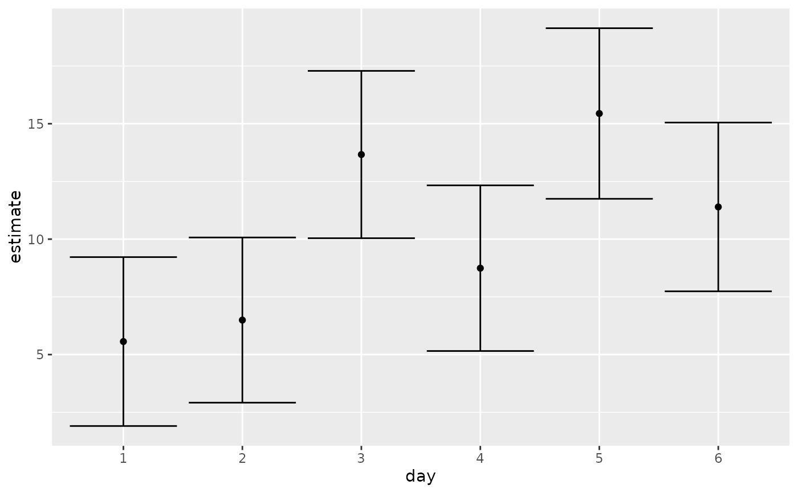

Tidy summarizes information about the components of a model. A model component might be a single term in a regression, a single hypothesis, a cluster, or a class. Exactly what tidy considers to be a model component varies across models but is usually self-evident. If a model has several distinct types of components, you will need to specify which components to return.
Usage
# S3 method for emmGrid
tidy(x, conf.int = FALSE, conf.level = 0.95, ...)Arguments
- x
An
emmGridobject.- conf.int
Logical indicating whether or not to include a confidence interval in the tidied output. Defaults to
FALSE.- conf.level
The confidence level to use for the confidence interval if
conf.int = TRUE. Must be strictly greater than 0 and less than 1. Defaults to 0.95, which corresponds to a 95 percent confidence interval.- ...
Additional arguments passed to
emmeans::summary.emmGrid()orlsmeans::summary.ref.grid(). Cautionary note: misspecified arguments may be silently ignored!
Details
Returns a data frame with one observation for each estimated marginal mean, and one column for each combination of factors. When the input is a contrast, each row will contain one estimated contrast.
There are a large number of arguments that can be
passed on to emmeans::summary.emmGrid() or lsmeans::summary.ref.grid().
See also
tidy(), emmeans::ref_grid(), emmeans::emmeans(),
emmeans::contrast()
Other emmeans tidiers:
tidy.lsmobj(),
tidy.ref.grid(),
tidy.summary_emm()
Value
A tibble::tibble() with columns:
- conf.high
Upper bound on the confidence interval for the estimate.
- conf.low
Lower bound on the confidence interval for the estimate.
- df
Degrees of freedom used by this term in the model.
- p.value
The two-sided p-value associated with the observed statistic.
- std.error
The standard error of the regression term.
- estimate
Expected marginal mean
- statistic
T-ratio statistic
Examples
# load libraries for models and data
library(emmeans)
# linear model for sales of oranges per day
oranges_lm1 <- lm(sales1 ~ price1 + price2 + day + store, data = oranges)
# reference grid; see vignette("basics", package = "emmeans")
oranges_rg1 <- ref_grid(oranges_lm1)
td <- tidy(oranges_rg1)
td
#> # A tibble: 36 × 9
#> price1 price2 day store estimate std.error df statistic p.value
#> <dbl> <dbl> <chr> <chr> <dbl> <dbl> <dbl> <dbl> <dbl>
#> 1 51.2 48.6 1 1 2.92 2.72 23 1.07 0.294
#> 2 51.2 48.6 2 1 3.85 2.70 23 1.42 0.168
#> 3 51.2 48.6 3 1 11.0 2.53 23 4.35 0.000237
#> 4 51.2 48.6 4 1 6.10 2.65 23 2.30 0.0309
#> 5 51.2 48.6 5 1 12.8 2.44 23 5.23 0.0000261
#> 6 51.2 48.6 6 1 8.75 2.79 23 3.14 0.00459
#> 7 51.2 48.6 1 2 4.96 2.38 23 2.09 0.0482
#> 8 51.2 48.6 2 2 5.89 2.34 23 2.52 0.0190
#> 9 51.2 48.6 3 2 13.1 2.42 23 5.41 0.0000172
#> 10 51.2 48.6 4 2 8.14 2.35 23 3.46 0.00212
#> # … with 26 more rows
# marginal averages
marginal <- emmeans(oranges_rg1, "day")
tidy(marginal)
#> # A tibble: 6 × 6
#> day estimate std.error df statistic p.value
#> <chr> <dbl> <dbl> <dbl> <dbl> <dbl>
#> 1 1 5.56 1.77 23 3.15 0.00451
#> 2 2 6.49 1.73 23 3.76 0.00103
#> 3 3 13.7 1.75 23 7.80 0.0000000658
#> 4 4 8.74 1.73 23 5.04 0.0000420
#> 5 5 15.4 1.79 23 8.65 0.0000000110
#> 6 6 11.4 1.77 23 6.45 0.00000140
# contrasts
tidy(contrast(marginal))
#> # A tibble: 6 × 8
#> term contrast null.value estimate std.error df statistic adj.p.value
#> <chr> <chr> <dbl> <dbl> <dbl> <dbl> <dbl> <dbl>
#> 1 day day1 ef… 0 -4.65 1.62 23 -2.87 0.0261
#> 2 day day2 ef… 0 -3.72 1.58 23 -2.36 0.0547
#> 3 day day3 ef… 0 3.45 1.60 23 2.15 0.0637
#> 4 day day4 ef… 0 -1.47 1.59 23 -0.930 0.434
#> 5 day day5 ef… 0 5.22 1.64 23 3.18 0.0249
#> 6 day day6 ef… 0 1.18 1.62 23 0.726 0.475
tidy(contrast(marginal, method = "pairwise"))
#> # A tibble: 15 × 8
#> term contrast null.value estimate std.error df statistic
#> <chr> <chr> <dbl> <dbl> <dbl> <dbl> <dbl>
#> 1 day day1 - day2 0 -0.930 2.47 23 -0.377
#> 2 day day1 - day3 0 -8.10 2.47 23 -3.29
#> 3 day day1 - day4 0 -3.18 2.51 23 -1.27
#> 4 day day1 - day5 0 -9.88 2.56 23 -3.86
#> 5 day day1 - day6 0 -5.83 2.52 23 -2.31
#> 6 day day2 - day3 0 -7.17 2.48 23 -2.89
#> 7 day day2 - day4 0 -2.25 2.44 23 -0.920
#> 8 day day2 - day5 0 -8.95 2.52 23 -3.56
#> 9 day day2 - day6 0 -4.90 2.45 23 -2.00
#> 10 day day3 - day4 0 4.92 2.49 23 1.98
#> 11 day day3 - day5 0 -1.78 2.47 23 -0.719
#> 12 day day3 - day6 0 2.27 2.54 23 0.894
#> 13 day day4 - day5 0 -6.70 2.49 23 -2.69
#> 14 day day4 - day6 0 -2.65 2.45 23 -1.08
#> 15 day day5 - day6 0 4.05 2.56 23 1.58
#> # … with 1 more variable: adj.p.value <dbl>
# plot confidence intervals
library(ggplot2)
ggplot(tidy(marginal, conf.int = TRUE), aes(day, estimate)) +
geom_point() +
geom_errorbar(aes(ymin = conf.low, ymax = conf.high))

# by multiple prices
by_price <- emmeans(oranges_lm1, "day",
by = "price2",
at = list(
price1 = 50, price2 = c(40, 60, 80),
day = c("2", "3", "4")
)
)
by_price
#> price2 = 40:
#> day emmean SE df lower.CL upper.CL
#> 2 6.24 1.89 23 2.33 10.1
#> 3 13.41 2.12 23 9.02 17.8
#> 4 8.48 1.87 23 4.62 12.3
#>
#> price2 = 60:
#> day emmean SE df lower.CL upper.CL
#> 2 9.21 2.11 23 4.85 13.6
#> 3 16.38 1.91 23 12.44 20.3
#> 4 11.46 2.18 23 6.96 16.0
#>
#> price2 = 80:
#> day emmean SE df lower.CL upper.CL
#> 2 12.19 3.65 23 4.65 19.7
#> 3 19.36 3.27 23 12.59 26.1
#> 4 14.44 3.74 23 6.71 22.2
#>
#> Results are averaged over the levels of: store
#> Confidence level used: 0.95
tidy(by_price)
#> # A tibble: 9 × 7
#> day price2 estimate std.error df statistic p.value
#> <chr> <dbl> <dbl> <dbl> <dbl> <dbl> <dbl>
#> 1 2 40 6.24 1.89 23 3.30 0.00310
#> 2 3 40 13.4 2.12 23 6.33 0.00000187
#> 3 4 40 8.48 1.87 23 4.55 0.000145
#> 4 2 60 9.21 2.11 23 4.37 0.000225
#> 5 3 60 16.4 1.91 23 8.60 0.0000000122
#> 6 4 60 11.5 2.18 23 5.26 0.0000244
#> 7 2 80 12.2 3.65 23 3.34 0.00282
#> 8 3 80 19.4 3.27 23 5.91 0.00000502
#> 9 4 80 14.4 3.74 23 3.86 0.000788
ggplot(tidy(by_price, conf.int = TRUE), aes(price2, estimate, color = day)) +
geom_line() +
geom_errorbar(aes(ymin = conf.low, ymax = conf.high))
# joint_tests
tidy(joint_tests(oranges_lm1))
#> # A tibble: 4 × 5
#> term num.df den.df statistic p.value
#> <chr> <dbl> <dbl> <dbl> <dbl>
#> 1 price1 1 23 30.3 0.0000134
#> 2 price2 1 23 2.23 0.149
#> 3 day 5 23 4.88 0.00346
#> 4 store 5 23 2.52 0.0583